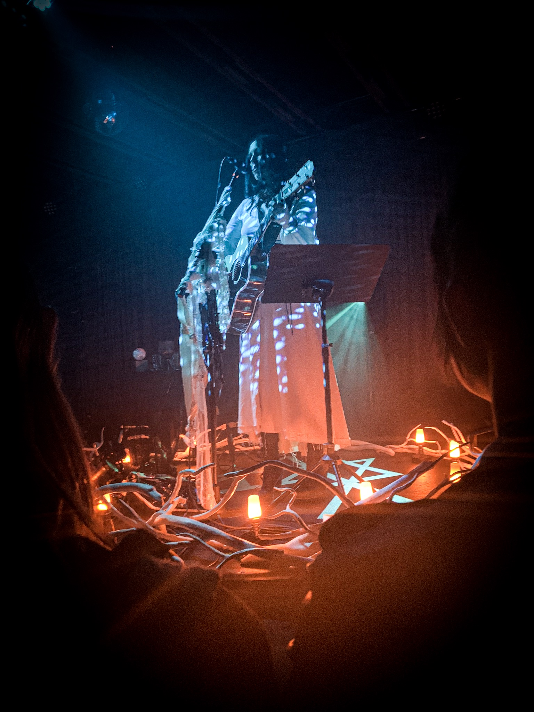
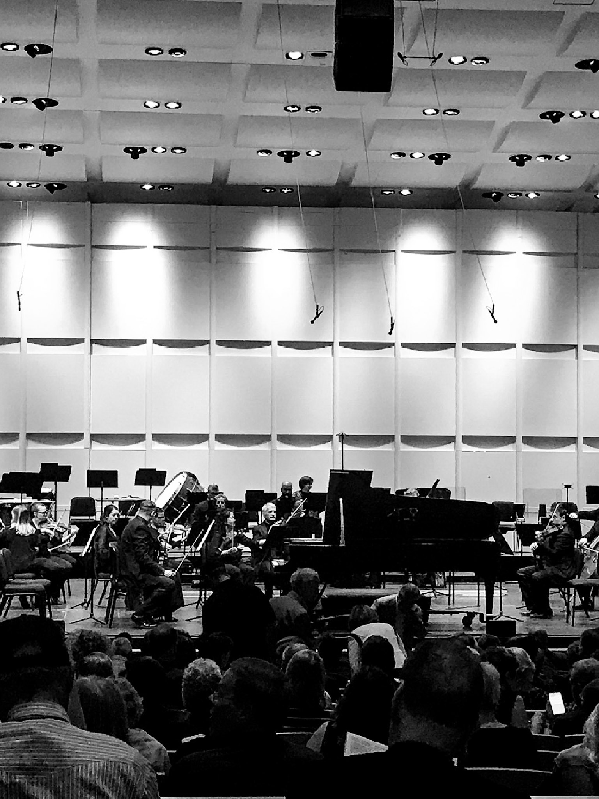
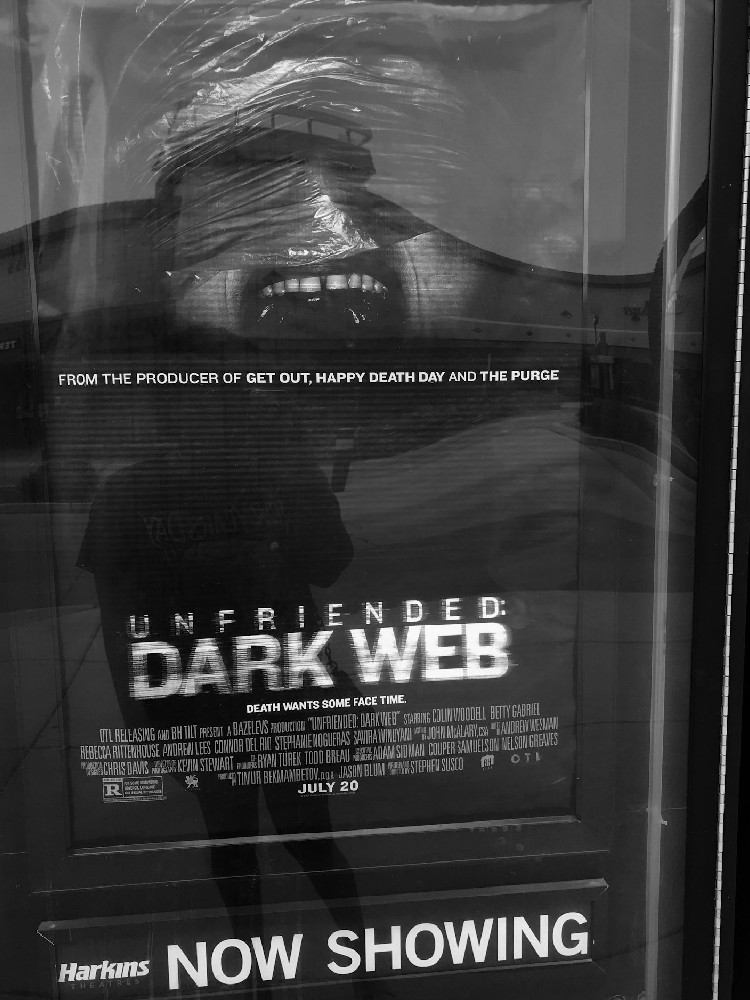
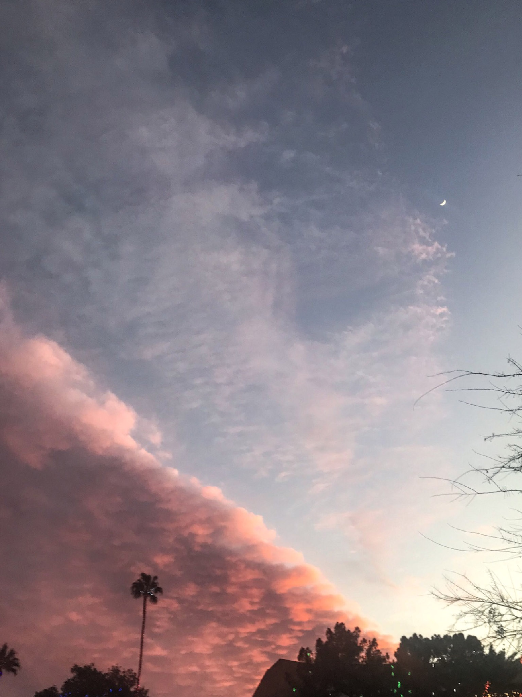

My Journey
I unexpectedly started the road to web development three years ago when I fell in love with coding. Through my educational journey I have learned many different coding languages. I am an expert with HTML, CSS, and WordPress. I also have a great foundation in XML, PHP, MYSQL, Linux and C#. I’m sure you are wondering why I have learned so many languages. I want to create the best user experience the internet can offer and I don't want a lack of knowledge to hold me back from that. Whether back-end or front-end coding is needed, I am able to bring an idea to life using Adobe Photoshop, Illustrator, and Dreamweaver as shown through my work. In my past, I have worked in a team at Human where I solved problems and gave demos of new technology to my fellow employees. There I also gained experience with Microsoft Office suites, professional communication skills, and my love of planning.
Career Goals
My goal is to help a company expand its reach by developing a website that is brand identifiable, marketable, has great semantic design, and give their audience a lasting impression that will keep them coming back to the website for years to come. I truly love making websites. I want to make as many amazing websites as I can.
My Interests
|  |  |  |  |
| Concerts | Phoenix Symphony Hall | Horror Films | Sunsets |
I love attending concerts around town and even some classical performances. I also enjoy being scared so I try to catch all the new horror films in theaters. But as much as I love staying busy, my absolute favorite thing to do is just sit in a park and watch the beautiful sunsets we have in Arizona.